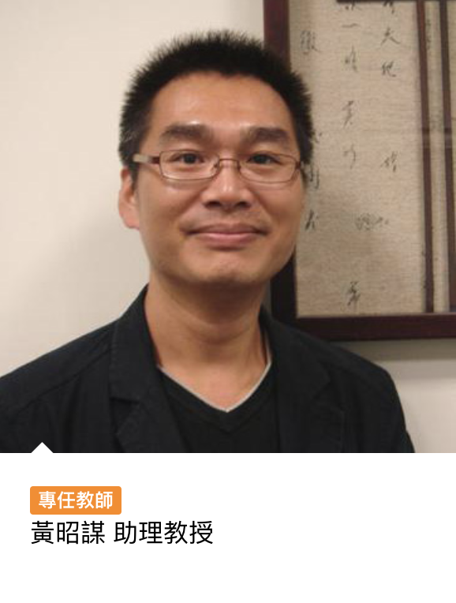

關於資傳
歷史沿革
世新大學資訊傳播學系，前身為世界新聞專科學校「圖書資料科」設立於1964年10月15日，1991年世界新聞專科學校改制為世界新聞傳播學院，1995年8月設系為圖書資訊學系。
世界新聞傳播學院於1997年度改名為世新大學。圖書資訊學系也因應網路時代來臨、國家未來發展需求，自2001年起更名為「資訊傳播學系」，專注於數位匯流、數位內容與傳播的專業人才之培育，目前設有大學部、碩士班、及在職進修碩士專班等不同學制以因應教育需求。
資傳特色
現代人的生活已和網路脫不了關係，在這個在這個網路傳播崛起的時代，便是本系培育的人才能夠大顯身手的時刻，資傳系的課程主要對於三大面向：資訊設計能力、知識加值能力、網路傳播能力。讓學生畢業在這個資訊爆炸的年代於網路洪流中，扮演重要的傳播者，將資訊傳播給需要的民眾，並可在各行各業扮演數位化的中介角色。
學生學四年系所會盡所能地提供資源給予學習資源及實習機會，而現在系上也和許多新媒體平台公司合作，許多學生在畢業後都成為了新媒體界的佼佼者。
師資陣容
|  |